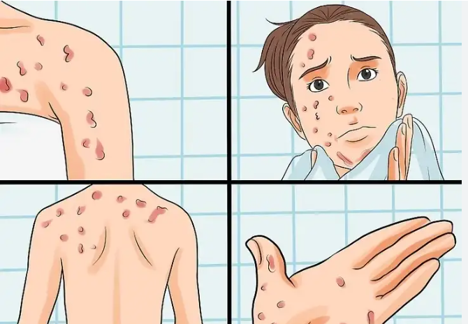

Sexually Transmitted Infections (STIs) Information
HIV/AIDS
Introduction
The virus known as human immunodeficiency virus (HIV) targets the immune system of the body. AIDS, or acquired immunodeficiency syndrome, is the disease's most advanced stage. HIV attacks white blood cells in the body, impairing immunity. This increases the risk of contracting infections, some malignancies, and diseases like tuberculosis.

Transmission
- Through blood, semen, vaginal fluids, rectal fluids, and breast milk.
- Commonly spread through unprotected sex, sharing needles.
- Less commonly, through blood transfusions and organ transplants with infected blood.
- Engaging in unprotected oral, anal, or vaginal sex with an infected individual.
Symptoms
- Early stage: Flu-like symptoms such as fever, sore throat, and fatigue (acute HIV infection).
- Chronic stage: Asymptomatic period where the virus is still active but reproduces at very low levels.
- Advanced stage (AIDS): Severe immune system damage, weight loss, chronic diarrhea, night sweats, and opportunistic infections like tuberculosis and certain cancers.
Treatment
- Antiretroviral therapy (ART) to manage the virus, keep the immune system functioning, and reduce the viral load to undetectable levels.
- Regular medical check-ups and blood tests to monitor health and treatment effectiveness.
- Choose less risky sexual behaviors.
- Use condoms every time you have sex.
- Do not inject drugs.
Chlamydia
Introduction
Chlamydia is one of the most common sexually transmitted infections (STIs) caused by the bacterium Chlamydia trachomatis. It can affect both men and women and is especially prevalent among young people, particularly those under 25. Chlamydia can infect the genitals, rectum, and throat. If left untreated, it can lead to serious health complications, including infertility and increased susceptibility to other STIs.
Transmission
- Primarily spread through vaginal, anal, or oral sex.
- Can be transmitted even if the infected partner does not ejaculate.
- Passed from mother to baby during childbirth, potentially causing eye infections or pneumonia in the newborn
- Rarely through non-sexual means if infected bodily fluids contact mucous membranes.
- Reinfection is possible if both partners are not treated.
- Reinfection is possible if both partners are not treated
Symptoms
- Burning sensation during urination
- Itching or burning around the tip of the penis
- Pain during sexual intercourse
- Abnormal vaginal discharge
- Painful periods (increased discomfort during menstrual cycles)
Treatment
- Regular screening for sexually active individuals, especially under 25 and those with new or multiple sex partners.
- Consistent and correct use of condoms during all types of sexual activity.
- Safe sexual practices: limiting the number of sexual partners, open communication about STIs with partners.
- Education and awareness through public health campaigns and education programs.
Gonorrhea
Introduction
Gonorrhea is a common sexually transmitted infection (STI) caused by the bacterium Neisseria gonorrhoeae. It can affect both men and women and is most prevalent among young people aged 15-24. Gonorrhea can infect the genitals, rectum, and throat. If left untreated, it can lead to serious health complications, including infertility and increased risk of contracting other STIs.
Transmission
- Sexual Contact: Gonorrhea is primarily spread through vaginal, anal, or oral sex with an infected partner. This includes penetrative sex and close genital contact where bodily fluids may be exchanged.
- Asymptomatic Transmission: The infection can be transmitted even if the infected partner does not show symptoms. Many individuals with gonorrhea may not be aware they are infected but can still spread the disease.
- Transmission: Childbirth, an infected mother can pass gonorrhea to her baby, which can lead to serious health issues for the newborn, such as severe eye infections that can cause blindness.
- Sexual Networks: The infection spreads more easily within sexual networks where multiple sexual partners are involved, increasing the likelihood of transmission.
- Oral Transmission: Gonorrhea can infect the throat through oral sex, leading to a condition known as pharyngeal gonorrhea.
- Non-Sexual Transmission: Rare, gonorrhea can potentially be spread through sharing sex toys if they are not properly cleaned between uses.
Symptoms
In Women
- Increased vaginal discharge, which may be yellow or green.
- Painful urination.
- Pain during sexual intercourse.
- Abdominal or pelvic pain.
In Man
- White, yellow, or green discharge from the penis.
- Itching or burning around the tip of the penis.
- Painful bowel movements.
- Painful urination.
Prevention
- Consistent Condom Use: Using condoms correctly and consistently during all types of sexual activity (vaginal, anal, and oral) significantly reduces the risk of gonorrhea transmission.
- Regular STI Screenings: Regular testing for sexually active individuals, especially those with new or multiple partners, helps in early detection and treatment of gonorrhea.
- Proper Cleaning of Sex Toys: Ensuring sex toys are properly cleaned between uses or using condoms on sex toys can prevent transmission
- Education and Communication: Educating oneself and one’s partners about STIs, including gonorrhea, and maintaining open communication about STI status and safe sex practices can help prevent the spread of the infection.
- Avoiding Sexual Activity with Infected Partners: Abstaining from sex with partners who have symptoms of gonorrhea until they have been tested and treated.